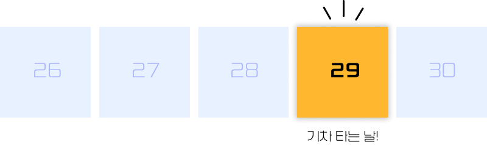
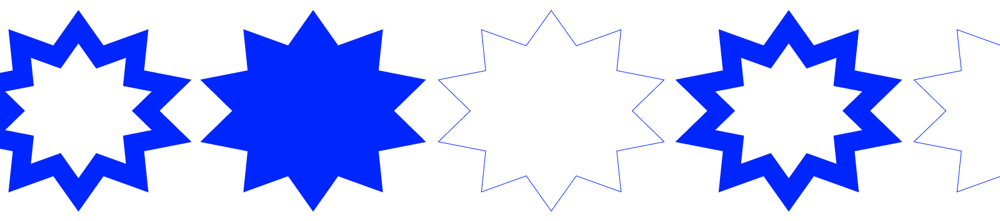

대한민국에서 나고 자란 20대의 사람이라면, KTX를 타 본 사람이 그렇지 않은 사람보다 많을 것이다.
얼마 전까지의 나는 거기에 포함되지 못했지만.
인생 첫 기차 타기
어릴 때부터 우리나라 방방곡곡 여행은 다 갔지만, 그 흔하다는 부산은 기차 타고 가 본 적이 없었다. 더구나 스무 살이 되고 밖에 돌아다니기가 더욱 귀찮아진 나는 KTX와는 꾸준한 거리감을 유지하고 있는 사람이었다.
그러다 올해 1월 29일, 드디어(!) KTX를 타 볼 일이 생겼다. 사실 별로 좋은 일은 아니었다. 제천에 살고 있는 세상에서 제일 건강한 우리 아빠. 무슨 일을 해도 아프질 않고 병원도 가지 않던 분이 대상포진이 와 입원을 하셨단다. 최근에 바빠 얼굴도 보질 못했으니, 오랜만에 아빠 보러 가기 위해 인생 첫 기차를 탄 셈이었다.

드디어 당일이 되었다!
아침 일찍 일어나 1호선을 타고 청량리에 도착해, 11시 20분 기차를 탔다. 급하게 예약해 창문 자리를 잡지 못한 건 아쉽지만 그저 그런대로 자리에 앉았다. 아빠 병문안을 가고,
풍경도 구경하고 다시 돌아오는 기차를 탔다. 오후 2시 55분 열차, 6호차 6A 좌석이었다. 이번엔 창문 자리도 잡아서 기분이 좋다. 그런데,
'내가 잘못 보고 있는 건가?'
그게 아니라면, 내 자리에 정체 모를 아저씨가 앉아 있다. 그냥 있는 것도 아니고, 간이 책상에는 짐을 잔뜩 널어놓고 팔짱을 딱 낀 채로 좋은 잠을 자고 계신다.
옆의 6B 좌석에는 아주머니가 있는데, 날 자꾸 빤히 바라본다. 안 그래도 나만 일어서 있어서 이 6호차의 모두가 날 쳐다보고 있는데 아주머니까지 그러시면 식은땀이 배로 난다구요. (제발 모두 저를 무시해주세요...)
'어떡하지? 어떡하지? 어떡하지?'
당황해 5초 간 얼어 있다가 전화를 받는 척 민망한 얼굴을 숨기며 칸을 빠져나왔다. 열차를 잘못 탔나 싶어 급한 마음에 아직 닫히지 않은 칸의 문을 빠져나가 상봉행인 것을 확인한다. 그러자 밖의 역무원 분이 위험하니 빨리 들어가라며 소리쳤다. 한 번 더 부끄러워져 그대로 안으로 다시 들어와버렸다.
내가 열차를 헷갈린 건 분명 아닌데, 다른 경우의 수가 없다. 이것저것 검색해볼 것도 없다. 사람이 꽉 차 있던 바로 그 6호차에 다시 들어가 확인해야만 한다.
이게 뭐가 그렇게 대단한 일이냐고?
누구나 그렇게 말할 수 있다. 그냥 처음부터 물어봤으면 되잖아? 라고.
그런데 가끔씩 불쑥 튀어나오는 이 소심한 근성이 어디 가지를 않는다.
원래 내가 서 있던 줄인데, 누군가 대뜸 이유 없이 양보를 권해도 그냥 자리를 내어 주고
시험 보기 전에 의자가 이상하다고 말하지 못해 45분 동안 불편한 채로 시험을 보거나,
아무의 잘못도 없었던 가족과의 말다툼은 먼저 사과하지 못해 5일을 말도 섞지 않고 지냈다.
이제는 좀 달라질 때도 됐다. 사소한 일에서부터 바뀌어야
앞으로도 이런 일 쯤은 아무렇지 않게 해결하는 사람이 되는 거야.
떨리는 마음으로 재입장!
다시 들어가니 역시나 모두가 날 쳐다본다. 약간의 철판을 깔고 빠른 걸음으로 들어가 6A 자리의 아저씨를 마주한다. 역시 깨울 자신은 없다고 흔들리던 찰나, 옆의 분에게라도 물어봐야겠다고 생각했다. 용기를 낸 순간 아주머니와 내가 동시에 말을 건다.
저기요!
할 말을 잊은 날 앞에 두고 아주머니가 말을 이어간다.
“6A 자리 분이시죠? 이 사람이 제 남편인데, 죄송하지만 옆의 6C 자리에 앉으시면 안 될까요?"
그러고보니 복도를 사이에 두고 옆 자리가 하나 비어 있다. 엮어 보면, 내가 먼저 6A를 예매한 후 남은 두 자리를 잡으셨는데 내가 나중에 타는 사람이니 일단 붙은 좌석을 차지하고 보신 모양이다. 이제는 어이가 없어서 말이 안 나오지만… 죽은 듯 자고 있는 그 아저씨를 차마 깨우고 안으로 비집고 들어가기에는 정신적 에너지가 너무 많이 소모되었다. 결국 그냥 6C 자리에 앉았다. 창문 자리는 또 놓쳐버렸어. 그래도 집에 오는 열차는 맞으니 결과적으로 해결이 된 것이다.
